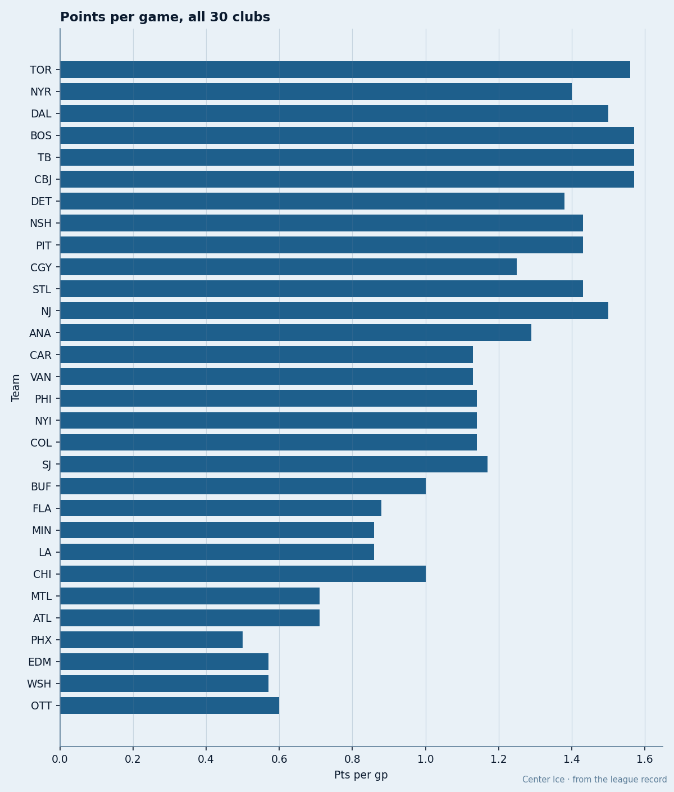
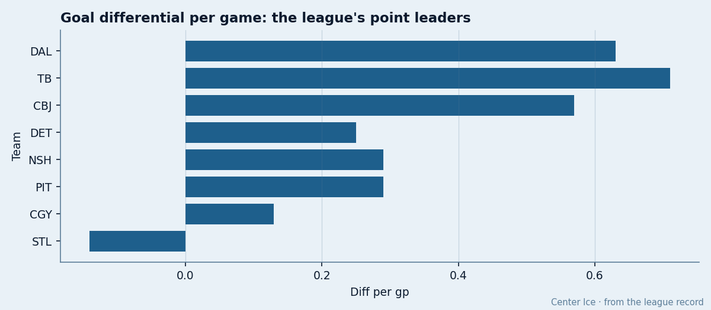
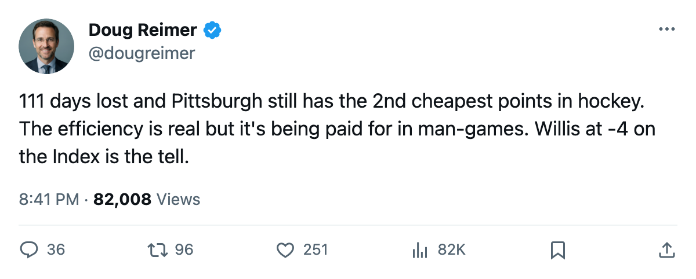

$4.89M a Point, 111 Days Lost: Pittsburgh Has the Cheapest Points in Hockey and the Longest Injury Ward
The Penguins sit 2nd in cost-per-point after 7 games. They also lead the league in days lost to injury. The two facts are connected.
 Doug ReimerAnalytics editor, ex-video coach · The Slot Report
Doug ReimerAnalytics editor, ex-video coach · The Slot Report
The method is simple. Divide the payroll by the points. The lower the number, the more hockey a club is getting for its money. After 7 games,  Pittsburgh Penguins sits at $4.89M a point on a $48.92M payroll, behind only Dallas at $4.83M. No other club is under $5.00M. Tampa Bay and Columbus are next at $5.44M and $5.64M.
Pittsburgh Penguins sits at $4.89M a point on a $48.92M payroll, behind only Dallas at $4.83M. No other club is under $5.00M. Tampa Bay and Columbus are next at $5.44M and $5.64M.
The problem is what it costs to get those cheap points. Pittsburgh Penguins has lost 111 player-days to injury this season, the most in the league. Eight separate spells. The next club is New York Island at 100 days on 4 spells, then Philadelphia at 97 on 9. Pittsburgh is absorbing the heaviest physical toll in hockey and still producing 1.43 points per game, the 7th-best rate in the East.

The body count
The eight spells that have cost Pittsburgh 111 days are spread across the whole roster. Renberg, Holzinger, Melichar, Surovy, McKenna, and Willis all carry unnamed issues. Fata is out with an abdomen. Chartrand with an ankle. No single injury explains the total; the volume does.
 Shane Willis72 is worth watching separately. The Bureau's Development Index has him at -4, the joint-largest fall in the league alongside
Shane Willis72 is worth watching separately. The Bureau's Development Index has him at -4, the joint-largest fall in the league alongside  Jamal Mayers71. His base sits at 78, his current overall reads 69. In 7 games he has 4 points. He plays 20.9 minutes a night on the second wing. A man rated 78 at base who drops to 69 while carrying second-line minutes is a misallocation the Index flags before the standings do.
Jamal Mayers71. His base sits at 78, his current overall reads 69. In 7 games he has 4 points. He plays 20.9 minutes a night on the second wing. A man rated 78 at base who drops to 69 while carrying second-line minutes is a misallocation the Index flags before the standings do.

What the differential says
Among the 8 clubs at 10 or more points, Pittsburgh Penguins has the 5th-best goal differential per game at +0.29. Tampa Bay leads that group at +0.71. Dallas is at +0.63. Pittsburgh's +2 total across 7 games (19 for, 17 against) means the Penguins are winning close ones and losing close ones at nearly the same rate. Two of their five wins came in overtime.
That is what a roster with 111 days lost looks like in the goal column. The talent is there:  Mario Lemieux86 at 40 has 10 points in 7 games on 20.3 minutes a night, 85 overall, pace of 117 over 82.
Mario Lemieux86 at 40 has 10 points in 7 games on 20.3 minutes a night, 85 overall, pace of 117 over 82.  Chris Drury87 has 9 points.
Chris Drury87 has 9 points.  Johan Hedberg87 has started all 7 games and sits at 86 in the Book. The pieces fit. They just keep getting hurt.
Johan Hedberg87 has started all 7 games and sits at 86 in the Book. The pieces fit. They just keep getting hurt.
The contract picture
Pittsburgh's payroll is $48.92M, the 4th-lowest in the league. Only  Edmonton Oilers ($42.61M),
Edmonton Oilers ($42.61M),  Atlanta Thrashers ($38.53M), and
Atlanta Thrashers ($38.53M), and  Vancouver Canucks ($46.36M) spend less. The Penguins are getting 10 points on what is essentially a middle-budget roster.
Vancouver Canucks ($46.36M) spend less. The Penguins are getting 10 points on what is essentially a middle-budget roster.
That efficiency won't survive this injury rate. The club that leads the league in days lost will need its depth by February. Pittsburgh has no player at 100 morale in the top-10 list, no player above 93 in the club average, and 8 spells already through 7 games. The Development Index flags one man falling, the injury sheet flags eight, and the Book has the top three forwards at 85, 85, and 80. That is not a roster built to survive 82 games of this. It is a roster built to produce cheap points for a short window, and the window is closing by attrition.
